HARNESS · ЛИЧНЫЙ ИИ-КОНТУР PO
Как рос Harness:
14 шагов от промпта
до агентского центра
Я не проектировал систему заранее. Каждый шаг — ответ на боль, которую надоело терпеть. Схема этапа — живая диаграмма: клик открывает её крупно.
Карта пути
Четыре фазы, четырнадцать болей
Слова этапов — мои реплики в тот момент, как они были. Номер ведёт на слайд этапа.
Этап 1 из 14 · Один на один с LLM
Начало: промпт и модель
«Хочу, чтобы LLM подсказывала мне задачи на день»
- Промптыконтекст дня копирую в чат руками
- ZCodeкодовый агент на ноутбуке вместо чата
Работает, но каждый раз начинаю с нуля: модель ничего не помнит.
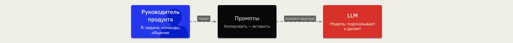
Этап 2 из 14 · Один на один с LLM
Память: Cortex
«Какой-то хаос в структуре LLM — давай разложим все .md по PAF/OPS»
- Cortexпапка .md: проекты, люди, решения по PAF/OPS
- Одно устройствоагент каждый раз читает знакомую структуру
Модель помнит меня между сессиями — но данные всё ещё приношу я.
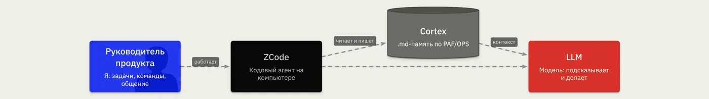
Этап 3 из 14 · Один на один с LLM
Данные без копипаста: MCP
«Хочу, чтобы LLM сама рассказывала, что в Jira и в почте. Надоело копировать и вставлять»
- MCP Jiraзадачи и статусы
- MCP Confluenceстраницы и требования
- MCP Emailписьма и приглашения
Агент сам сходит за фактами. Копипаст исчез.
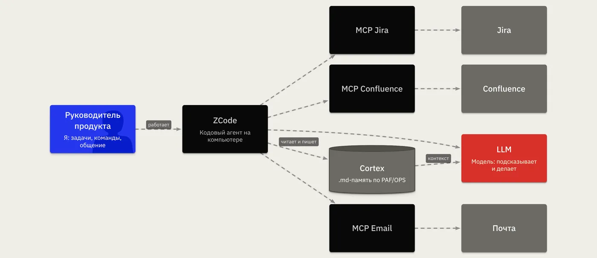
Этап 4 из 14 · Всё общение в одном месте
Удобно, как в ленте
«В Claude Code работать неудобно — вот бы как в Threads: чётко и удобно»
- Единая лентаMastodon + Phanpy: посты вместо простыни терминала
- Comunagerмост, который кладёт события в ленту
Читаю ленту, а не вывод терминала.
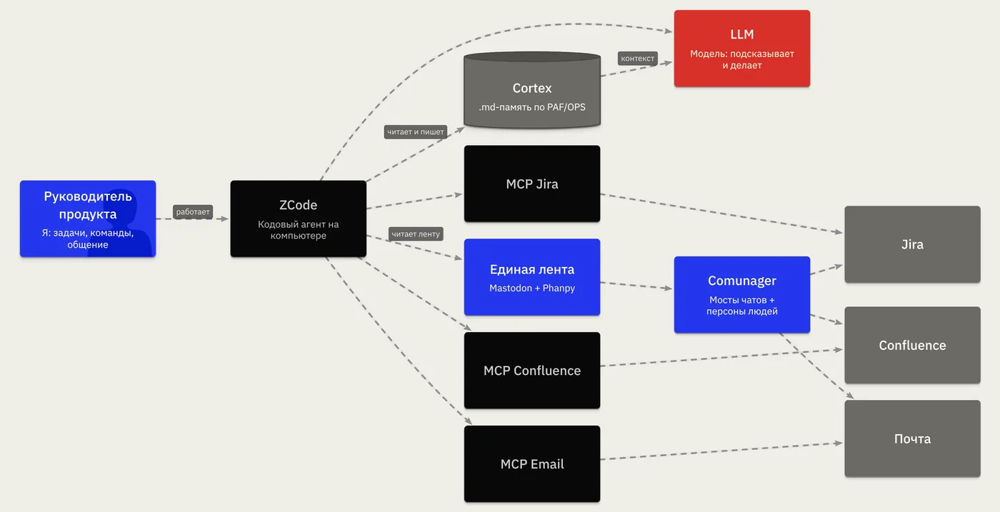
Этап 5 из 14 · Всё общение в одном месте
Всё общение — в одну ленту
«Информации, на которую надо реагировать, всё больше. Почему бы не переключить сюда каналы, личку и всё общение?»
- Мосты чатовMTS.Link, Telegram, VK, почта, Jira
- Персоныкто есть кто: люди и их роли
Одна лента вместо десятка мессенджеров.
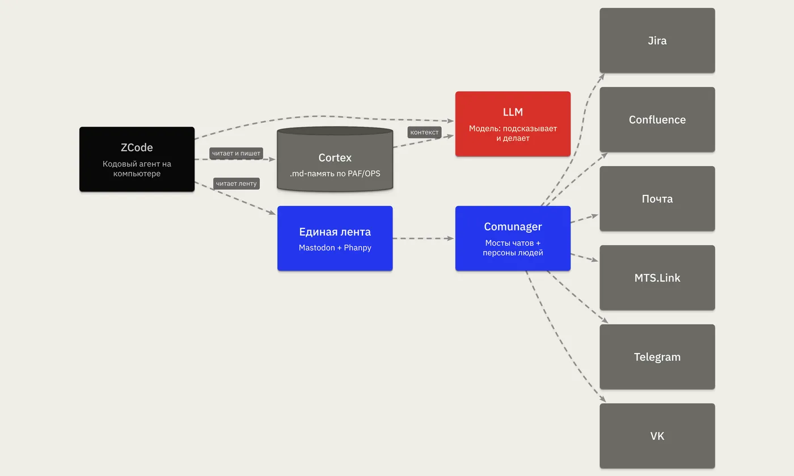
Этап 6 из 14 · Всё общение в одном месте
Контекст точечно: граф
«Информации так много, что LLM жрёт контекст как не в себя. Надо оптимизироваться»
- Cortex-граффакты и связи вместо простыни .md
- Точечная выборкаагент берёт только нужный кусок
Контекст перестал раздуваться вместе с потоком.
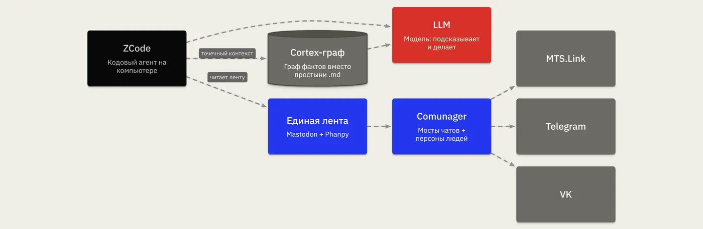
Этап 7 из 14 · Агентский центр
Агентский центр: Hermes + Matrix
«Claude Code Desktop — топовая вещь, но в корпорации его не использовать. Надо построить единый ИИ-агентский центр»
- Hermes AgentsPO-агенты команд на сервере
- Matrix + Elementкомнаты: человек и агент
- MCP Hubодин вход ко всем данным
- Skills и контекстнавыки и общий центр контекста
Агенты живут на сервере и пишут мне в мессенджер.
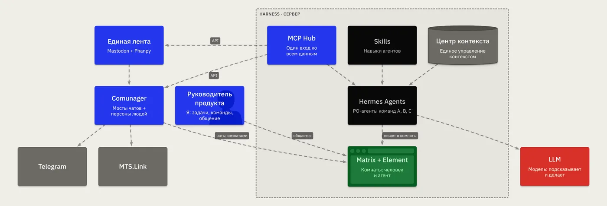
Этап 8 из 14 · Агентский центр
Отчёты — виджеты, а не текст
«Прикольно: в одном центре общаюсь со всеми. Но отчёты текстом, .md и .html читать неудобно»
- Виджеты Elementспринт, бизнес, OKR, лента, задачи
- UI + ИИу каждого экрана свой агент рядом
Отчёт открывается экраном прямо в комнате.
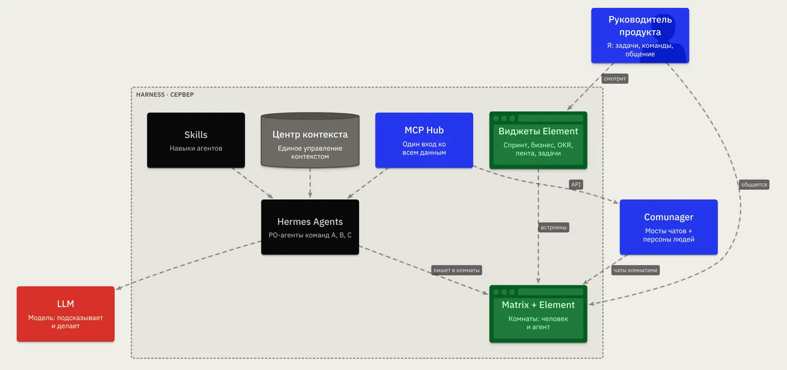
Этап 9 из 14 · Агентский центр
Рутина — скриптам, .html — людям
«Почему уходит так много токенов? 90% действий — рутина, её решают скрипты»
- Агенты-отчётыблокеры, OKR, спринт, дейли, БФТ
- Скрипт + ИИданные собирает код, модель — только выводы
Токены — на мышление, рутина — бесплатно.
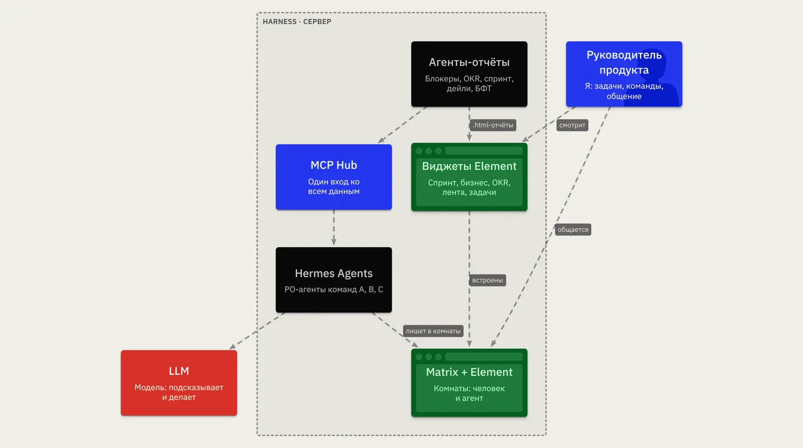
Этап 10 из 14 · Агентский центр
Один оркестратор
«Что-то много всего я уже делаю — надо настроить единый оркестратор»
- Оркестратор Harnessдоска поручений агентам
- Наблюдаемостьметрики, ошибки, алерты
Ставлю задачу — оркестратор раздаёт её агентам и следит.
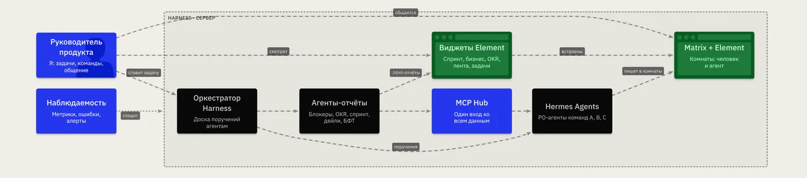
Этап 11 из 14 · Платформа
Ноутбук не нужен
«А зачем мне вообще ноутбук? 95% рабочего времени я провожу в телефоне в Element — давай сделаем приложения»
- Инбоксзадачи и обещания
- Трекер задачдоска агентов в кармане
- Календарьвстречи и ответы на приглашения
Работаю с телефона: те же виджеты — приложением.
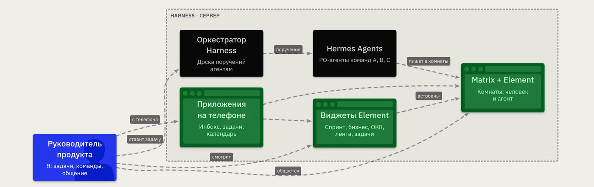
Этап 12 из 14 · Платформа
ИИ + единый центр общения
«Слишком много тупых взаимодействий: что, кто, где лежит, что по срокам — зачем мне это делать?»
- Агент отвечает за менякто, что, где, к какому сроку
- Одна точкачаты, почта и агенты в одном мессенджере
Справочные вопросы закрывает агент, я — решения.
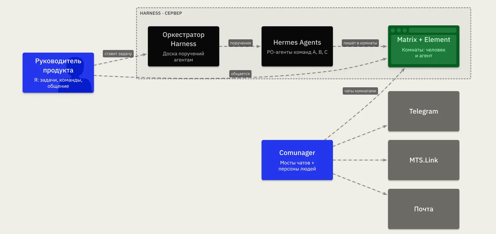
Этап 13 из 14 · Платформа
Свой сервер под защитой
«Всё это жрёт очень много ресурсов — давай выносить на отдельный сервер»
- Authentikодин вход для людей и агентов
- Harness Safeguardсторож сервисов
- Connection Safeguardсторож соединений и мостов
Сервер живёт сам: падение поднимается, вход — один.
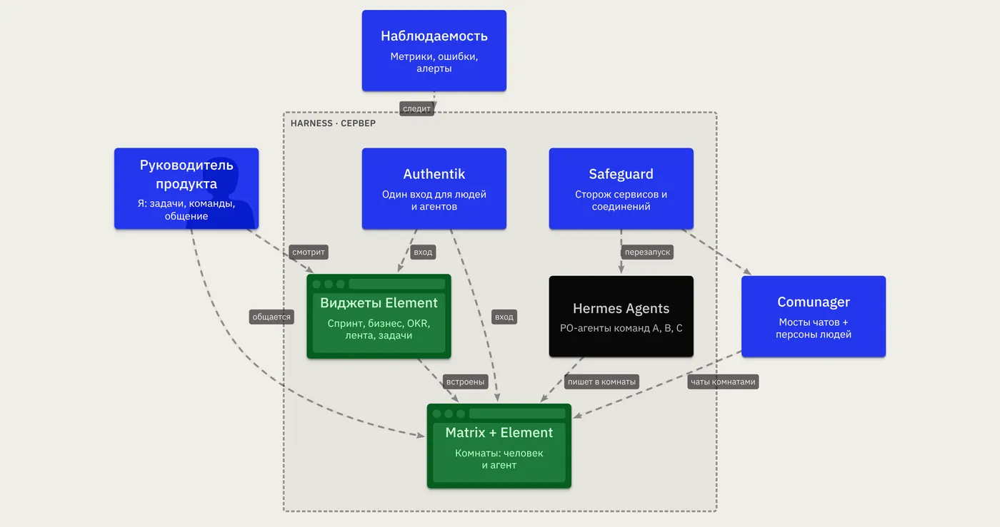
Этап 14 из 14 · Платформа
Harness сегодня
«Если всё уже на сервере — почему до агентов нельзя достучаться из любой LLM?»
- Hermes-BridgeMCP + A2A: агенты доступны снаружи
- Корпоративная LLMвнутренние модели для агентов
- Внешняя LLMClaude приходит через мост
Любая модель говорит с моими агентами по протоколу.
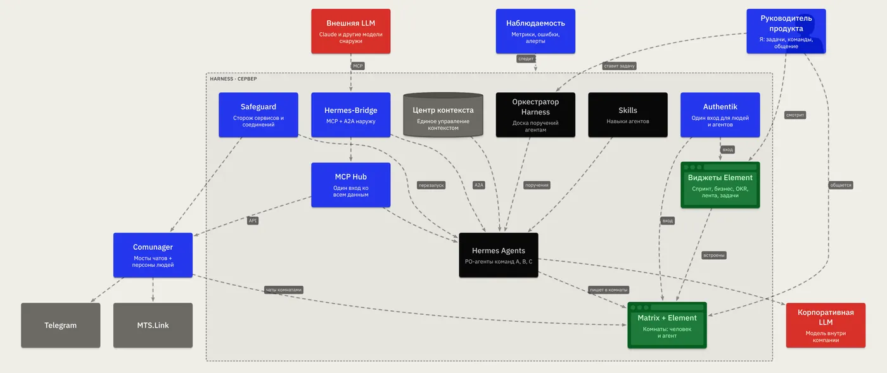
Что я вынес
Четыре правила, которые сложились сами
Каждый шаг — ответ на конкретное неудобство
Ни один слой не появился «на будущее». Поэтому в системе нет мёртвых частей: всё, что есть, когда-то мешало жить без него.
Мышление — модели, рутина — скриптам
Девять действий из десяти — сбор и раскладка данных. Их делает код, модель получает готовую выжимку и думает только над выводами.
Человеку — экран, а не текст
Лента вместо терминала, виджет вместо .md, приложение на телефоне вместо ноутбука. Агент пишет туда, где я и так нахожусь.
Вход и наблюдаемость — до масштаба
Как только агентов стало много, без одного входа, сторожей и метрик всё сыпалось. Сервер стал платформой, когда научился жить сам.
Как нарисованы схемы
Одна модель —
14 видов
Схемы описаны кодом в LikeC4: элементы и связи — один раз, каждый этап — вид с нужным срезом. Поменял модель — все 14 схем перерисовались сами.
Исходник — harness-evolution/likec4/harness.c4, сборка — node tools/build_likec4.mjs harness-evolution.